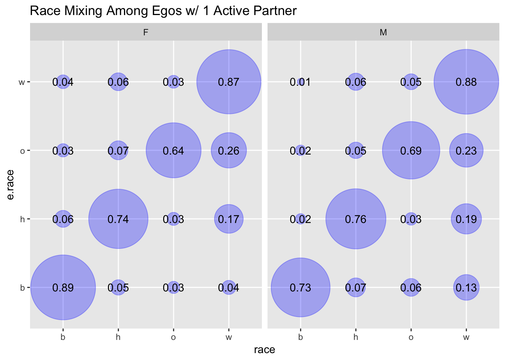

Chapter 5 Concurrency & Racial Assortativity
5.1 GOING TO RE-CREATE IN ERGM EGO?
5.2 other:
- concurrency among cohabs versus marriages versus other
- by age
CURRENTLY - CROSS SECTIONAL CONCURRENCY
thinking about concurrency and racial assortativity
previous work shows concurrency drives transmission, and racial asssortativity can maintain / exacerbate disparities in prevalence
but what about assortativity by concurrency levels? is assortativity similar between monogramous people and those who have concurrent partners? what about among people who have concurrent parters?
this section takes a look at what is observed in NSFG - to see if there are difference in assortativity and if this idea is worth exploring (and likely simulating to understand the effects)
WILL NEED TO IMPUTE PARTNER RACE FOR MOST NON-ACTIVE PARTNERSHIPS IF WE WANT TO USE A YEAR-SUMMARY MEASURE
see insert chapter for deg distribution
here: what is the race mixing matrix for egos who report only 1 partner then: what is the race mixing matrix for egos who report 2 partners then: what is the race mixing matrix for egos who report 3 partners
5.3 Unweighted Mixing Plots
5.4 Weighted
this gets weirder b/c svy design package doesn’t seem to handle NAs well, errors when trying to generate counts I think b/c SEs are calculated automatically and they fail

turns out there are no ‘other’ egos w/ hispanic partners who have a degree of 2, removing ‘other’ egos from this graph